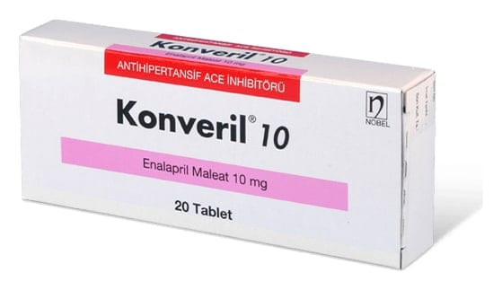

Konveril 10 mg Tablet, 60 Adet

Ne için kullanılır
KT · Bölüm 1 KONVERİL anjiyotensin dönüştürücü enzim inhibitörleri (ADE inhibitörleri) adlı ilaç sınıfının bir üyesidir.
KONVERİL beyaz ortadan çentikli tabletlerdir. Her bir tabletin içinde 10 mg enalapril maleat bulunmaktadır. 20 ve 60 tabletlik ambalajlarda kullanıma sunulmuştur. Ürün bileşimindeki laktoz monohidrat inek sütü kaynaklıdır.
KONVERİL aşağıdaki durumlarda kullanılmaktadır: Yüksek kan basıncı (hipertansiyon) tedavisi Kalp fonksiyonunda zayıflığın (semptomatik kalp yetmezliği) tedavisi Kalp fonksiyonunda zayıflığın (semptomatik kalp yetmezliği) önlenmesi
Kalp yetmezliği belirtileri olan hastaların pek çoğunda KONVERİL kalp yetmezliğinin kötüleşmesini yavaşlatır, kalp yetmezliği nedeniyle hastaneye başvurma ihtiyacını azaltır ve hastalardan bazılarının daha uzun yaşamasına yardımcı olur.
Belirtilerin gelişmesinden önce kalp yetmezliğinin erken evresindeki pek çok hastada KONVERİL kalp fonksiyonunun zayıflamasını önlemeye ve belirtilerin (örn., nefes darlığı, yürüme gibi hafif fiziksel aktivitelerden sonra yorulma veya ayak bileklerinde ve ayaklarda şişlik) gelişimini yavaşlatmaya yardımcı olur. Bu hastalarda kalp yetmezliğine bağlı hastanede yatış süresi daha kısa olabilir.